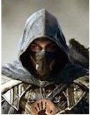
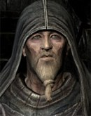

Штаб.
Вы прибыли в штаб после долгого перерыва на задание
Для вручения награды перед вами предстал сам Старейшина, один из семи.
— Элитный ассасин Мортис прибыл с успешно выполненного задания.
— Здравствуй, Азраил. Быть может, тебе интересно, почему я обращаюсь к тебе по имени?... Вот, держи свою награду за задание.
*Звук поставленного на стол мешка с золотыми монетами*
— Слушай внимательно, Азраил. Твоё первое задание как элитного ассасина окончено не полностью, надеюсь ты этого не забыл. Судя по отчётам разведчиков, Генри начал возвращать память благодаря помощи Свена Траслауга. За последние несколько месяцев он вновь начал изучать навыки вора.
— И что с того? Какова моя цель?
— Подробностей я рассказать тебе не могу, нет. Но вот что скажу: для нас чрезвычайно важно поймать Генри живым. Тебе поручено выполнить это задание, на этот раз до конца. Что бы он не сделал, ты должен доставить его.
— Куда я должен направиться?
— В Бандор. Если что-то понадобится, ты скорее всего сможешь найти пару-тройку наших разведчиков. Также ты получишь от Темного Братства новое снаряжение - ядовитый кинжал из зуба василиска. Используй его только в чрезвычайных ситуациях.
— Задание принято, Старейшина. Nomine Mortis.
— Bellum - initium et finis nostrae sortis.
ПРОДОЛЖЕНИЕ СЛЕДУЕТ...
2016 Patamen©
Создатели:
Оводов Даниил
Особые благодарности:
Patamen - За названия материка, городов, трактиров и персонажей
Злой бог - за часть картинок и музыки.
и вам, за то, что прошли квест
Что было дальше? От лица Генри...